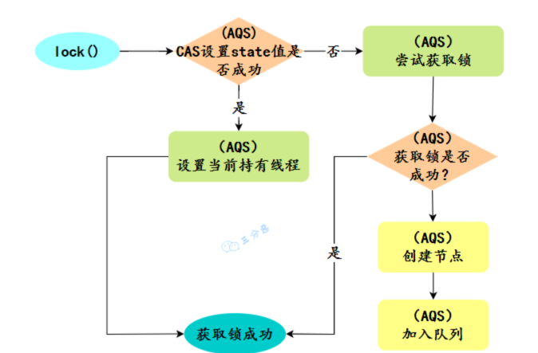

JUC并发之ReentrantLock[AQS]

ReentrantLock 是什么
ReentrantLock 是可重入的独占锁，只能有一个线程可以获取该锁，其它获取该锁的线程会被阻塞而被放入该锁的阻塞队列里面。
// 创建锁（默认是非公平锁）
ReentrantLock lock = new ReentrantLock();
// 获取锁操作
lock.lock();
try {
// 执行代码逻辑
} catch (Exception ex) {
// ...
} finally {
// 解锁操作
lock.unlock();
}ReentrantLock和Synchronized对比
- 可重入（和synchronized一样，都是可重入的）
- 有 trylock() 方法，比 synchronized 高级一点
- 有 lockInterruptibly() 可以对线程中断做出反应，比 synchronized 高级一点
- 默认是非公平锁，可以通过传参设置为公平锁

ReentrantLock 的具体实现是什么
如果锁当前没有被其它线程占用，并且当前线程之前没有获取过该锁，则当前线程会获取到该锁，然后设置当前锁的拥有者为当前线程，并设置 AQS 的状态值为1 ，然后直接返回。如果当前线程之前己经获取过该锁，则这次只是简单地把 AQS 的状态值加1后返回。
如果该锁己经被其他线程持有，非公平锁会尝试去获取锁，获取失败的话，则调用该方法线程会被放入 AQS 队列阻塞挂起。
什么是公平锁和非公平锁
非公平锁在调用 lock 后，首先就会调用 CAS 进行一次抢锁，如果这个时候恰巧锁没有被占用，那么直接就获取到锁返回了。
非公平锁在 CAS 失败后，和公平锁一样都会进入到 tryAcquire 方法，在 tryAcquire 方法中，如果发现锁这个时候被释放了（state == 0），非公平锁会直接 CAS 抢锁。公平锁会判断等待队列是否有线程处于等待状态，如果有则不去抢锁，乖乖排到后面。
相对来说，非公平锁会有更好的性能，因为它的吞吐量比较大。当然，非公平锁让获取锁的时间变得更加不确定，可能会导致在阻塞队列中的线程长期处于饥饿状态。
公平锁的实现代码
java.util.concurrent.locks.ReentrantLock.FairSync#tryAcquire
protected final boolean tryAcquire(int acquires) {
final Thread current = Thread.currentThread();
int c = getState();
if (c == 0) {
//公平锁会判断等待队列是否有线程处于等待状态，如果有则不去抢锁
if (!hasQueuedPredecessors() &&
compareAndSetState(0, acquires)) {
setExclusiveOwnerThread(current);
return true;
}
}
else if (current == getExclusiveOwnerThread()) {
int nextc = c + acquires;
if (nextc < 0)
throw new Error("Maximum lock count exceeded");
setState(nextc);
return true;
}
return false;
}非公平锁的实现代码
java.util.concurrent.locks.ReentrantLock.Sync#nonfairTryAcquire
final boolean nonfairTryAcquire(int acquires) {
final Thread current = Thread.currentThread();
int c = getState();
if (c == 0) {
//非公平锁会直接 CAS 抢锁
if (compareAndSetState(0, acquires)) {
setExclusiveOwnerThread(current);
return true;
}
}
else if (current == getExclusiveOwnerThread()) {
int nextc = c + acquires;
if (nextc < 0) // overflow
throw new Error("Maximum lock count exceeded");
setState(nextc);
return true;
}
return false;
}AQS是什么
AbstractQueuedSynchronizer 抽象同步队列，简称 AQS ，它是Java并发包的根基，并发包中的锁就是基于AQS实现的。
AQS中涉及到哪些类
AbstractOwnerSynchronizer：是AQS的父类，里面只定义了当前获取到锁的线程
AbstractQueueSynchronizer：AQS类，继承自AbstractOwnerSynchronizer
主要包含3个成员变量
volatile int state：标记当前线程是否获取到锁
Node head：维护的队列头
Node tail：维护的队列尾
一些方法
- CAS相关的：设置state
- CAS相关的：设置队列头
- CAS相关的：设置队列尾
- 核心方法：acquire
- 模板方法：tryAcquire()
- 模板方法：tryRelease()
- 核心方法：addWaiter() ：将Node放入队列中。Node是什么？是线程获取不到锁的时候，会被AQS封装成Node对象，放入队列中。
- 核心方法：acquireQueue()：队列中的Node尝试获取锁
- 获取不到锁：shouldParkAfterFailedAcquire（）：判断是否需要阻塞
- 需要阻塞，调用parkAndCheckInterrupt（）方法阻塞
Sync：继承自AQS类
- 定义了一个抽象方法，lock() ，给用户提供，方便程序员进行上锁的。
FairSync：继承自Sync
- 公平锁，实现了 lock 方法，给程序员提供简单的获取锁的方式
- 因为继承自 Sync，Sync继承自AQS，所以它也实现了AQS中的模板方法：tryAcquire（）实现了获取锁的具体逻辑
NonFairSync：继承自Sync
- 非公平锁。实现了 lock 方法，给程序员提供简单的获取锁的方式
- 因为继承自 Sync，Sync继承自AQS，所以它也实现了AQS中的模板方法：tryAcquire（）实现了获取锁的具体逻辑

AQS的具体实现流程
sequenceDiagram App->>App: ReentrantLock lock = new ReentrantLock(); App->>ReentrantLock: lock.lock(); ReentrantLock->>NonfairSync: sync.lock() note right of NonfairSync: NonfairSync继承自Sync；Sync继承自AQS NonfairSync->>AQS: compareAndSetState(0, 1)
CAS操作 note right of NonfairSync: CAS操作成功 AQS-->>NonfairSync: CAS操作成功 NonfairSync->>AQS: setExclusiveOwnerThread(Thread.currentThread())
设置当前线程拿到锁 note right of NonfairSync: CAS操作失败 AQS-->>NonfairSync: CAS操作失败 NonfairSync->>AQS: acquire(1) AQS->>AQS: tryAcquire(args)
再次尝试获取锁 AQS->>AQS: addWaiter(Node.EXCLUSIVE)
获取不到，会将当前NonfaitSync放在队列中 AQS->>AQS: acquireQueued(node,args)
放到队列之后，如果是head节点，会再次尝试获取锁 AQS->>AQS: shouldParkAfterFailedAcquire(Node pred, Node node)
获取锁失败之后，判断当前节点是否需要阻塞
阻塞的条件是前驱节点的waitStatus是SIGNAL AQS->>AQS: parkAndCheckInterrupt()
需要需要阻塞，会进行阻塞：LockSupport.park(this)
并等待唤醒 note left of AQS: ReentrantLock的lock方法
对于获取到锁的线程来说，是响应中断的
对于同步队列中的线程，是不响应中断的
也就是如果对同步队列中的线程进行中断,是没有任何作用的
如果希望同步队列中的线程可以响应中断，需要使用lockInterruptibly方法

响应中断和不可响应中断
在Java中，运行中的线程，是不能通过程序的方式让它直接死亡的。
那么，你可能会问？中断不是让线程死亡嘛？
- 不是
对于运行中的线程来说，中断只是将这个线程的中断标识位改成了 true，但是此时线程还是在继续运行的。
不管是synchronized关键字，还是ReentrantLock，都是这样的。
下面是验证代码
package com.zs.j3y4.thread.lock;
import java.util.concurrent.locks.ReentrantLock;
public class InterruptReentrantLockDemo {
public static void main(String[] args) throws InterruptedException {
ReentrantLock lock = new ReentrantLock();
Thread t1 = new Thread(() -> {
try {
lock.lockInterruptibly();
System.out.println("Thread 1: Acquired lock. Running...");
// 模拟一些耗时操作，但没有适当地检查中断状态
while (true) {
for (int i = 0; i < Integer.MAX_VALUE; i++) {
// do nothing
}
}
} catch (InterruptedException e) {
e.printStackTrace();
} finally {
lock.unlock();
}
});
t1.start();
Thread.sleep(2000);
// 中断线程t1
System.out.println("Thread Main : interrupt Thread T1");
System.out.println("Thread Main : print Thread 1 interrupt flag :"+t1.isInterrupted());
t1.interrupt();
System.out.println("Thread Main : print Thread 1 interrupt flag :"+t1.isInterrupted());
}
}
它的打印结果是（注意此时程序还是在运行中的）
Thread 1: Acquired lock. Running...
Thread Main : interrupt Thread T1
Thread Main : print Thread 1 interrupt flag :false
Thread Main : print Thread 1 interrupt flag :true注意此时程序还是在运行中的，而且我们可以看到，Thread 1 的interrupt 标识已经改成了true
那么什么时候，可以立即响应中断呢。
- 当线程处于等待或者阻塞状态（如等待锁、等待I/O操作、等待超时等），此时被其他线程中断时，会抛出InterruptedException异常，并清除中断状态标志位
下面是验证代码
package com.zs.j3y4.thread.lock;
import java.util.concurrent.locks.ReentrantLock;
public class InterruptReentrantLockDemo {
public static void main(String[] args) throws InterruptedException {
ReentrantLock lock = new ReentrantLock();
Thread t1 = new Thread(() -> {
try {
lock.lockInterruptibly();
System.out.println("Thread 1: Acquired lock. Running...");
Thread.sleep(10000);
} catch (InterruptedException e) {
e.printStackTrace();
} finally {
lock.unlock();
}
});
t1.start();
Thread.sleep(2000);
// 中断线程t1
System.out.println("Thread Main : interrupt Thread T1");
System.out.println("Thread Main : print Thread 1 interrupt flag :"+t1.isInterrupted());
t1.interrupt();
System.out.println("Thread Main : print Thread 1 interrupt flag :"+t1.isInterrupted());
}
}
Thread 1 启动后就开始休眠 10s 钟，但是主线程在 2s 后对Thread 1 进行中断，此时由于 Thread 1 是处于休眠状态，所以它可以立即响应中断。
Thread 1: Acquired lock. Running...
Thread Main : interrupt Thread T1
Thread Main : print Thread 1 interrupt flag :false
Thread Main : print Thread 1 interrupt flag :true
java.lang.InterruptedException: sleep interrupted
at java.lang.Thread.sleep(Native Method)
at com.zs.j3y4.thread.lock.InterruptReentrantLockDemo.lambda$main$0(InterruptReentrantLockDemo.java:14)
at java.lang.Thread.run(Thread.java:748)
Process finished with exit code 0对于ReentrantLock的同步队列来说，我们知道同步队列中的Node（其实也就是线程）都是处于阻塞状态的。
我们又知道，在一般情况下，阻塞状态的线程是立即响应中断的。
但是，通过验证我们发现，ReentrantLock的同步队列中的线程，是不可响应中断的。
下面是验证代码
package com.zs.j3y4.thread.lock;
import java.util.concurrent.locks.ReentrantLock;
public class ReentrantLockDemo {
private static ReentrantLock lock = new ReentrantLock();
public static void main(String[] args) throws InterruptedException {
Thread t1 = new Thread(() -> {
System.out.println("Thread 1: Trying to acquire lock...");
lock.lock();
try {
System.out.println("Thread 1: Lock acquired. Waiting for 10 seconds.");
Thread.sleep(10000);
} catch (InterruptedException e) {
e.printStackTrace();
} finally {
lock.unlock();
System.out.println("Thread 1: Lock released.");
}
});
Thread t2 = new Thread(() -> {
System.out.println("Thread 2: Trying to acquire lock...");
lock.lock();
try {
System.out.println("Thread 2: Lock acquired.");
} finally {
lock.unlock();
System.out.println("Thread 2: Lock released.");
}
});
t1.start();
Thread.sleep(1000);
t2.start();
Thread.sleep(2000);
// 在此处中断线程t2
System.out.println("Thread 2 interrupted status is : " +t2.isInterrupted());
t2.interrupt();
System.out.println("Thread 2 interrupted status is : " +t2.isInterrupted());
}
}
开始两个线程，Thread 1 先执行，此时可以拿到锁，然后休眠10s；之后Thread 2 开始执行，2s 之后，对Thread 2 进行中断。
运行结果如下
Thread 1: Trying to acquire lock...
Thread 1: Lock acquired. Waiting for 10 seconds.
Thread 2: Trying to acquire lock...
Thread 2 interrupted status is : false
Thread 2 interrupted status is : true
Thread 1: Lock released.
Thread 2: Lock acquired.
Thread 2: Lock released.
Process finished with exit code 0我们发现 Thread 2 的中断标识位发生了变化，但是并没有立即中断。
那么，怎么让同步队列中的线程，立即响应中断呢。就需要使用ReentrantLock提供的lockInterruptibly方法，就可以立即响应中断了。
下面是验证代码
package com.zs.j3y4.thread.lock;
import java.util.concurrent.locks.ReentrantLock;
public class ReentrantLockDemo {
private static ReentrantLock lock = new ReentrantLock();
public static void main(String[] args) throws InterruptedException {
Thread t1 = new Thread(() -> {
System.out.println("Thread 1: Trying to acquire lock...");
lock.lock();
try {
System.out.println("Thread 1: Lock acquired. Waiting for 10 seconds.");
Thread.sleep(10000);
} catch (InterruptedException e) {
e.printStackTrace();
} finally {
lock.unlock();
System.out.println("Thread 1: Lock released.");
}
});
Thread t2 = new Thread(() -> {
System.out.println("Thread 2: Trying to acquire lock...");
try {
lock.lockInterruptibly();
System.out.println("Thread 2: Lock acquired.");
} catch (InterruptedException e) {
e.printStackTrace();
} finally {
lock.unlock();
System.out.println("Thread 2: Lock released.");
}
});
t1.start();
Thread.sleep(1000);
t2.start();
Thread.sleep(2000);
// 在此处中断线程t2
System.out.println("Thread 2 interrupted status is : " +t2.isInterrupted());
t2.interrupt();
System.out.println("Thread 2 interrupted status is : " +t2.isInterrupted());
}
}
运行结果如下
Thread 1: Trying to acquire lock...
Thread 1: Lock acquired. Waiting for 10 seconds.
Thread 2: Trying to acquire lock...
Thread 2 interrupted status is : false
Thread 2 interrupted status is : true
java.lang.InterruptedException
at java.util.concurrent.locks.AbstractQueuedSynchronizer.doAcquireInterruptibly(AbstractQueuedSynchronizer.java:900)
at java.util.concurrent.locks.AbstractQueuedSynchronizer.acquireInterruptibly(AbstractQueuedSynchronizer.java:1225)
at java.util.concurrent.locks.ReentrantLock.lockInterruptibly(ReentrantLock.java:340)
at com.zs.j3y4.thread.lock.ReentrantLockDemo.lambda$main$1(ReentrantLockDemo.java:37)
at java.lang.Thread.run(Thread.java:748)
Exception in thread "Thread-1" java.lang.IllegalMonitorStateException
at java.util.concurrent.locks.ReentrantLock$Sync.tryRelease(ReentrantLock.java:154)
at java.util.concurrent.locks.AbstractQueuedSynchronizer.release(AbstractQueuedSynchronizer.java:1265)
at java.util.concurrent.locks.ReentrantLock.unlock(ReentrantLock.java:462)
at com.zs.j3y4.thread.lock.ReentrantLockDemo.lambda$main$1(ReentrantLockDemo.java:42)
at java.lang.Thread.run(Thread.java:748)
Thread 1: Lock released.
Process finished with exit code 0对于ReentrantLock的同步队列中的线程，默认是不响应中断的
也就是如果对同步队列中的线程进行中断, 是没有任何作用的，只是中断标识位的修改
如果希望同步队列中的线程可以响应中断，需要使用lockInterruptibly方法
AQS的底层实现原理
其实底层实现原理还是CAS，加队列
AQS是一个抽象类，为啥没有抽象方法
AQS用到的设计模式是：模板方法设计模式
正常情况来说，模板方法应该会有一些方法用于给子类实现。
而AQS正好也是一个抽象类，也用到了模板方法设计模式，但是我们发现它里面需要子类实现的模板方法，默认都有一个 ”抛出异常“ 的实现。
//.....
protected boolean tryAcquire(int arg) {
throw new UnsupportedOperationException();
}
protected boolean tryRelease(int arg) {
throw new UnsupportedOperationException();
}
protected int tryAcquireShared(int arg) {
throw new UnsupportedOperationException();
}
protected boolean tryReleaseShared(int arg) {
throw new UnsupportedOperationException();
}
//.....这是为什么呢？为什么不直接定义成抽象方法呢？
- 这是因为AQS不仅用在了 ReentrantLock 中，用于实现独占锁。
- 还用在了其他类的实现中，用于实现共享锁，等等。
- 而 独占锁 需要实现：tryAcquire 和 tryRelease
- 而 共享锁 需要实现：tryAcquireShared 和 tryReleaseShared
如果设计成 抽象方法，那么这些方法都要在子类实现。 子类就会显得很臃肿。所以都添加了一个默认 “抛出异常” 的实现
相关资料
https://www.bilibili.com/video/BV1mP4y1i7Vm
B站这位up主的视频讲解的挺好的